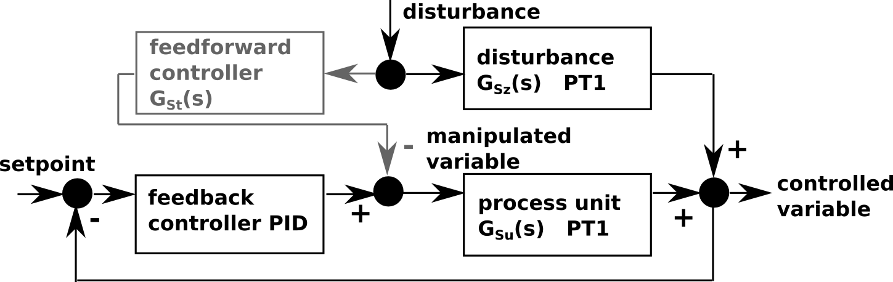
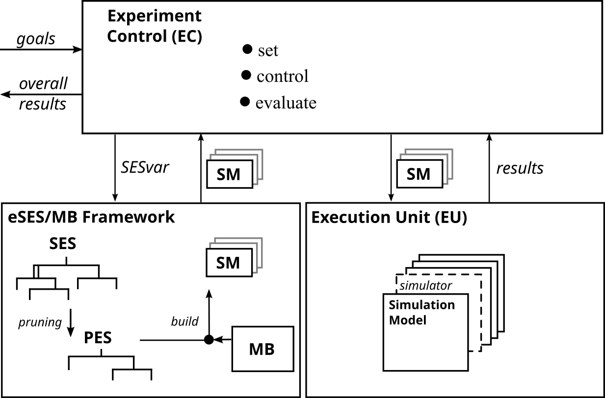

Feedback Control Example Including Model Generation and Execution
ATTENTION: first example for new model builder moBuild and new execution unit exUnit!Motivation
This example shows, how to specify, manage, generate, and execute a set of models of alternative system variants automatically using the Extended SES/MB Architecture and run an automated experiment.
It is demonstrated how to generate automatically executable Simulink models based on an SES and a user defined Simulink model base.
The case study for this example is a feedback control system described by transfer functions which is influenced by a disturbance.
This measurable disturbance can be optionally compensated with a feedforward control.
Aim of the automated experiment is to find the best structure and configuration to meet following goals:
- overshoot of controlled variable after disturbance should be smaller than that 5 percent
- settling time should be shorter than that 15 seconds
Alternative system structure variants:

First structure variant without feedforward control
Second structure variant with feedforward control
Basic SES:
First structure variant without feedforward control: SES variable feedforward = 0
Second structure variant with feedforward control: SES variable feedforward = 1
Description
Basically the SES in this example describes 2 model structure variants.
Model components in common are:
- a source for the setpoint (sourceSys)
- a block to compare the controlled variable to the setpoint (feedbackSys)
- a PID controller with variable parameters for k and Ti (ctrlPIDSys)
- the process unit described by a transfer function (procUnitSys)
- a source for the disturbance (sourceDist) and the disturbance described by a transfer function (tfDist) and
- a block to add the disturbance to the manipulated variable (addDist)
- the feedforward controller described by a transfer function (tfFeedforward)
- a block to add control signal (addFeedforward)
- sourceSys_out --> setpoint
- sourceDist_out --> disturbance
- addDist_out --> controlled variable
Files
- SES:Feedback_with_outputs_var.mat
- MB: MB.slx
- Experiment Control: ec_feedforward.m
SES
In the SES the optional feedforward controller is modeled with the Specialization "feedforwardCtrlSPEC". The selection of the feedforward controller or no controller when pruning is defined by the SES Variable "mode". The the non-existance of a system can be expressed using NONE element (see pattern #8). Parametrization of the PID controller is also done using SES Variables ("k_conf" and "Ti_conf").
Model Base
For generating an executable model, the general SES/MB approach is used. As model base (MB), where the dynamic models are defined, we use a user defined Simulink blockset library named MB.slx. This library contains preconfigured blocks, some of them directly copied from the Simulink standard library, others are user defined.
Connection Between SES and MB
The leaf entities in the SES represent and reference specific dynamic models from an MB. For example the entities "sourceSys" and "sourceDist" reference the Constant block from MB.slx. In order to define a connection between the SES leaf entities and the dynamic models from the MB, we use the special attribute "mb". You can find on each leaf entity the definition of the "mb" attribute with a specific string value that refers to an appropriate dynamic model. These references will be evaluated during model generation.
Full Automation of Simulation Experiments
Extended SES/MB Architecture
Experimentation Steps
The overall experiment needs to be coded in the Experiment Control.
For this experiment the general steps are as following:
* Try without a feedforward control:
feedforward=0 simulate with PID: k=1, Ti=1, Td=0
feedforward=0 simulate with PID: k=5, Ti=0.5, Td=0
* If the goals are reached with one of these configurations --> return PID configuration as overall result.
* Else try with a feedforward control:
feedforward=1 simulate with both PID configurations
* If the goals are reached with one of these configurations --> return structure and PID configuration as overall result.
* Else return "Goals cannot be reached with these configurations / parameters".
The Experiment Control for this example is the m-function ec_feedforward.m.Call:
[mode, k, Ti] = ec(percent_overshoot,max_settl_time)
Study this file to find out, how the SES, the MB, the (new) Model Builder and the (new) Execution Unit work together to perform an experiment. :)